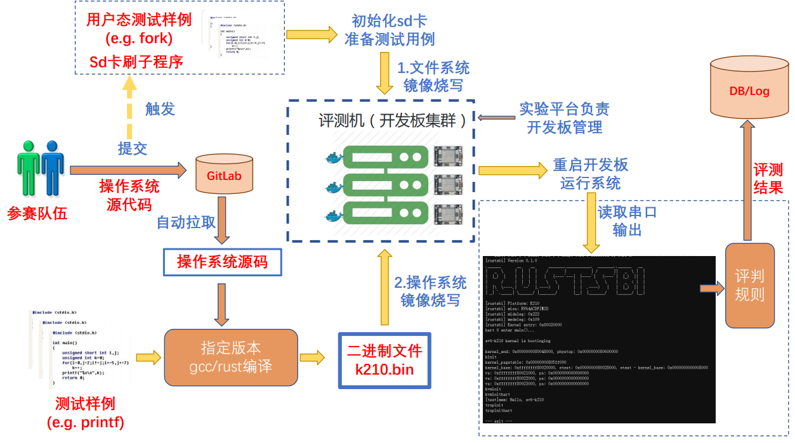
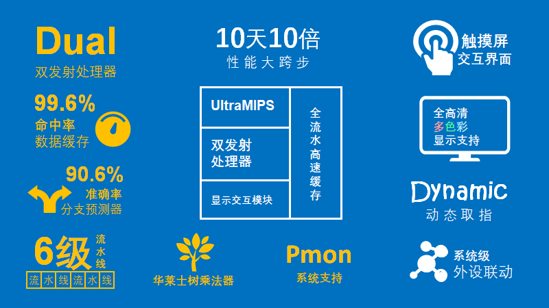
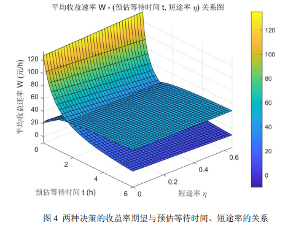
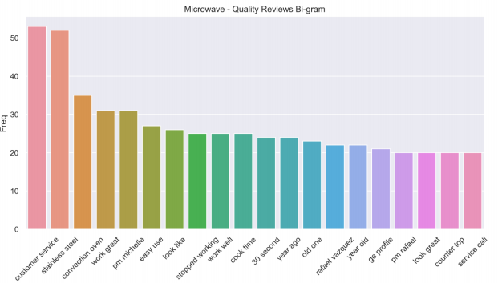
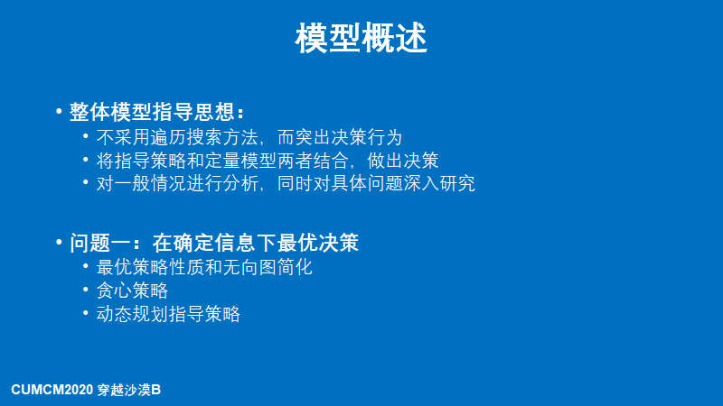
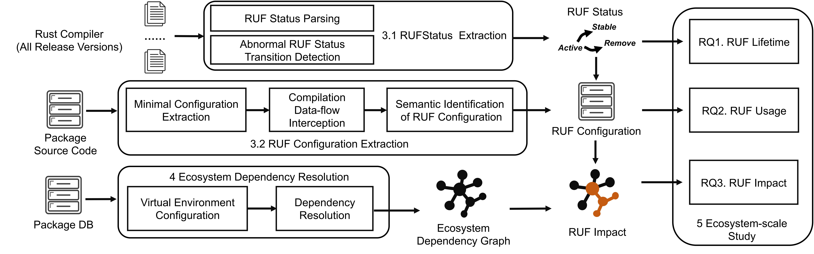

个人作品

UltraOS — RISC-V64 多核操作系统
以 Rust 编写、运行于 Kendryte-K210 双核 RISC-V 处理器，支持 EXT2 / FAT32 文件系统与双核调度。

UltraMIPS — FPGA 双发射计算机系统
顺序双发射六级流水 CPU，含全流水 Cache 与动态分支预测（90.6% 命中），系统能力大赛全国一等奖（2/31）。

出租车机场载客线性决策模型
面向深圳宝安国际机场，综合航班信息与收益期望建模司机决策，并优化上车点布局与短途优先权方案。

基于 n-gram 的商品评价模型
以 n-gram 与相关性分析提取亚马逊商品评价的关键特性，构建双线性回归方程预测产品口碑走势。
HITSZ 助手 — 智能校园信息平台
端云结合的校园信息平台：课表、社区、智能问答与敏感内容检测，覆盖大部分哈深本科生，日活 2500。

「沙漠掘金」多情景最优决策模型
针对单人与多人在确定 / 概率天气下的路径决策，给出动态规划与混合 Nash 博弈模型，获国赛二等奖。

Rust 编译器不稳定特性研究
软件工程顶会 ICSE (CCF-A) 一作；自研生态解析器解析 248M 依赖（99% 正确率），发现至多 44% 生态受影响、12% 无法编译。

基于 Rust 的系统搭建、防护与攻击
Rust for Linux 驱动框架、混合安全语言系统预研、C/C++ 与 Rust 交互的 ABI 安全检测工具。
All-in-Cloud：云计算挑战与展望
云计算领域综述（约 8k 字），比较云计算与边缘计算，展望云上时代的挑战与机遇。
HITSZ 通知新闻搜索引擎：Naive SE
基于 Lucene / IKAnalyzer / Tomcat 的中文校园搜索引擎，信息检索课程项目。
MIT xv6 6.S081 实验（2019）
独立完成 MIT 操作系统实验 1-9（Utilities / Shell / Lazy / CoW / Lock / Mmap 等）。
计算机网络全协议栈实验
VLAN / RIP / NAT 配置、以太帧抓包解析与 Socket 编程，覆盖 ETH / ARP / IP / ICMP / UDP 全栈。